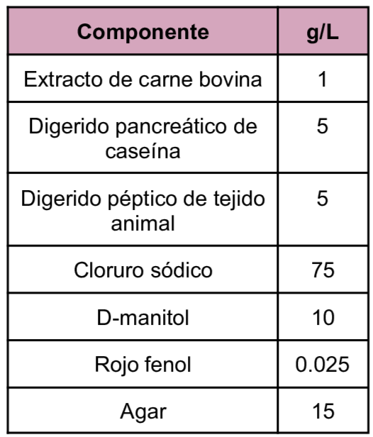
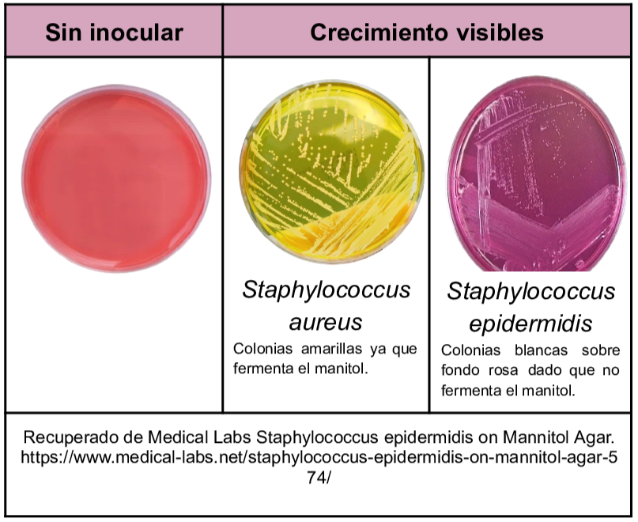

Medio de tipo selectivo y diferencial para el aislamiento de
Staphylococcus
en muestras clínicas, de alimentos y cosméticos.
Dentro de la composición del medio se encuentra el manitol como carbohidrato fermentable y el cloruro de sodio actúa como agente selectivo por último el rojo de fenol es el indicador de pH.
Composición

pH a 25°C 7.4±0.2
Resultados Posibles
Se observa crecimiento de colonias pequeñas ya sea amarillas o blancas dependiendo de la especie ademas el medio cambia de color dado el viraje del pH por la fermentación del manitol.

Referencias
MCD Lab (2025) Agar Sal y Manitol (FEUM,USP,EP,JP) https://mcd.com.mx/index.php?controller=attachment&id_attachment=26713
BD (2013) BD Mannitol Salt Agar. https://amyd.quimica.unam.mx/pluginfile.php/9874/mod_folder/content/0/Agar%20MSA.pdf?forcedownload=1
Romero, G. (2023) “Guía General de Medios de Cultivo Utilizados en la Industria” [Tesis de Licenciatura, Universidad Nacional Autónoma de México]. Repositorio DGBSDI. https://ru.dgb.unam.mx/server/api/core/bitstreams/30f99386-fb11-4b83-8931-b260bbcd5eef/conten